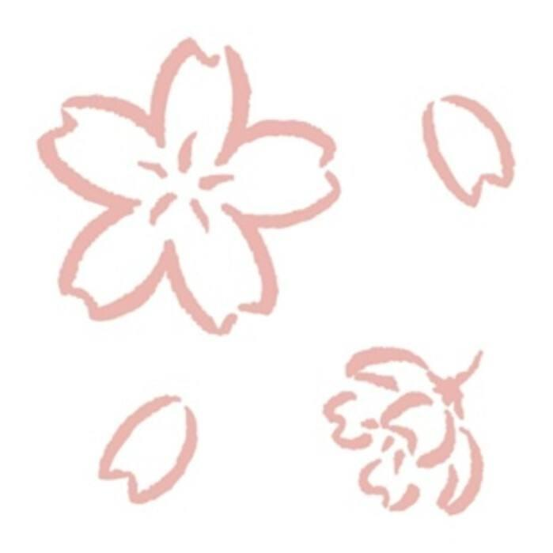

In January, I gradually used to the feeling of carving rubber stamp in the first month, but the lines are unstable, and the technology of leaving blank was not skilled. In February, my lines seem to be more stable, but the thinner lines were my weak points. I tried more difficult patterns and felt more comfortable with carving. Recently, I made much progress in both lines and blank leaving. I tried to make the blank more beautiful and neat. Although I still have a lot to improve, and my rubber stamps seem not neat enough, I still find this hobby interesting and relaxing, and I feel a sense of achievement when seeing my progress. I'll be very gald to share my experience and have some discussions who is also interested rubber stamp carving.^_^
Go back to Homepage